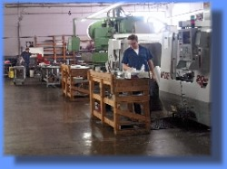
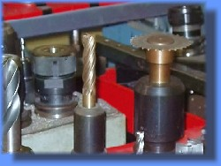

RAMP Engineering is a contract manufacturer based in Paramount, CA that specializes in close tolerance precision machining and efficient product development for commercial, industrial, aeronautical, automotive, communications, military, and medical applications.
RAMP Engineering houses a complete line of CNC and supplemental machinery to provide fast and reliable results to its customers - from prototype development to volume production. RAMP is capable of any custom turning, screw machine application, or milling operation. It also counts on a well equipped inspection department to assure quality.
RAMP Engineering works closely with their customers to turn their concepts into production. Prototype development is achieved by utilizing sophisticated CAD-CAM software to asses the product requirements. This is followed by using its computerized manufacturing equipment to produce each item to its exact specifications.
As a quality oriented machine shop, RAMP Engineering

- Maintains a highly competent workforce instilled with a strong work ethic.
- Applies the staff's years of expertise and ingenuity to troubleshoot difficult problems.
- Produces quality parts in a cost and time efficient manner.
- Exceeds the quality expectations and works with customer deadlines for a timely delivery.
- Values customer satisfaction and strong customer relationships.
Contact us and find out how we can meet your manufacturing needs!